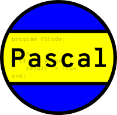
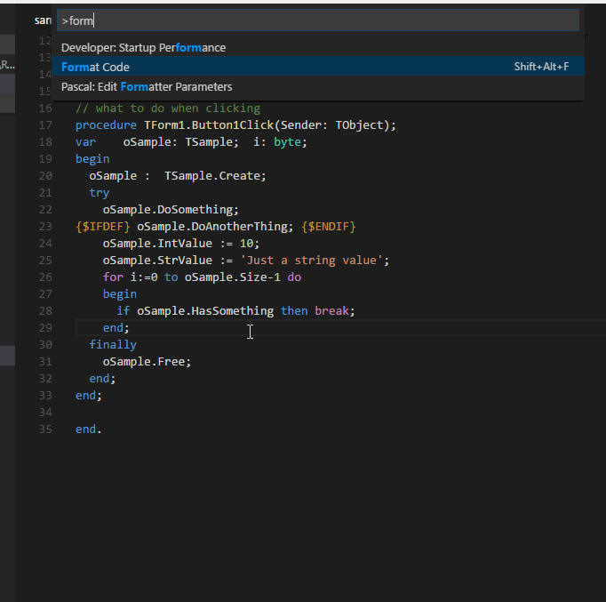
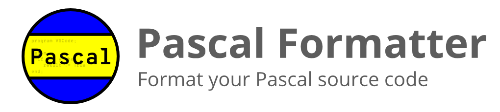

More engines, more workspaces
Pascal Formatter now publishes to Open VSX and adds support for additional formatting engines and workspace scenarios.

Pascal FormatterVisual Studio Code Extension
Pascal Formatter adds Code Formatting for Pascal and its dialects like Delphi and FreePascal, wiring up the Format Document and Format Selection commands to the external engine you already use.

What's new in 2.9
Pascal Formatter now publishes to Open VSX and adds support for additional formatting engines and workspace scenarios.
Features
Choose from FreePascal PToP, Jedi Code Format, Jedi Code Format (Quadroid), Embarcadero Formatter, or pasfmt.
02Point the extension at your engine executable, config file, indentation, and line wrap length.
03Formats seamlessly integrate with the native VS Code formatting commands.
04Supports Virtual Workspaces and Workspace Trust for remote and restricted environments.
Formatting engines
Pascal Formatter doesn't format code on its own — it uses external tools (engines) that you install and configure once. Pick the one that fits your platform and workflow.
Available on Windows, Linux and Mac OS X. Recommended if you need to format selected pieces of text, not just entire files.
The original Jedi Code Format is Windows only. The Quadroid fork adds Windows, Linux and Mac OS X support.
Embarcadero Formatter (Windows only) integrates with RAD Studio, while pasfmt is a modern, cross-platform alternative.

Configurable settings
Choose your engine, point to its executable, and optionally supply a configuration file. If you use FreePascal PToP, you can also fine-tune indentation and line wrap length.
pascal.formatter.engine: ptop, jcf, jcf-quadroid, embarcadero, or pasfmtpascal.formatter.enginePath: path to the engine executablepascal.formatter.engineParameters: configuration file for the selected enginepascal.format.indent and pascal.format.wrapLineLength (FreePascal PToP only){
"pascal.formatter.engine": "ptop",
"pascal.formatter.enginePath": "C:\\FPC\\2.6.4\\bin\\i386-win32\\ptop.exe",
"pascal.formatter.engineParameters": "C:\\FPC\\2.6.4\\bin\\i386-win32\\default.cfg",
"pascal.format.indent": 2,
"pascal.format.wrapLineLength": 80
}Remote development ready
pascal.formatter.enginePath setting until the workspace is trustedFAQ
FreePascal PToP, Jedi Code Format, Jedi Code Format (Quadroid), Embarcadero Formatter, and pasfmt. You install the engine of your choice separately and point the extension to it.
Yes, but only with FreePascal PToP. Jedi Code Format and Embarcadero Formatter only work on entire files, so use PToP if you need Format Selection.
Set pascal.formatter.engine to one of ptop, jcf, jcf-quadroid, embarcadero, or pasfmt, then set pascal.formatter.enginePath to the engine executable. An optional pascal.formatter.engineParameters setting points to a configuration file.
You can control pascal.format.indent for the number of spaces used per indentation level and pascal.format.wrapLineLength for the maximum characters per line.
It opens or generates the parameters file for the currently selected engine, so you can review or tweak formatting rules without leaving VS Code.
Yes! It works on all VS Code forks, ensuring compatibility and seamless integration with your favorite tools.
If you have a feature request, bug report, or suggestion, please submit it through our GitHub Issues page. We appreciate your feedback!
If you have a question that's not covered in the FAQ, feel free to reach out through our support channels at GitHub Discussions. We're here to help!
Donate
Pascal Formatter is open source, and your support helps keep maintenance, improvements, and engine compatibility moving forward.